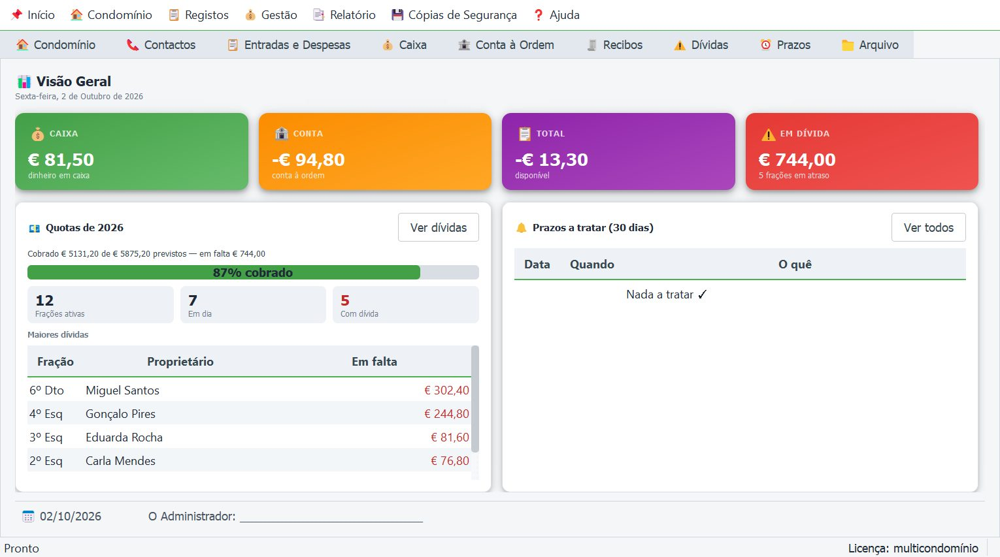
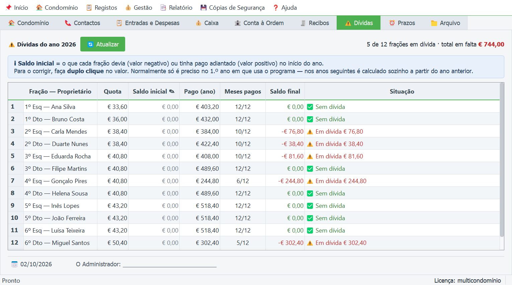

Frações e contactos
Permilagem e quota de cada fração, isenções num ano, proprietários e representantes, com telefone e email.
CONFIG no fim do ficheiro.
Gestão de condomínio · Windows
O Meu Condomínio regista frações, quotas, caixa e conta bancária, calcula as dívidas e o orçamento do ano seguinte por permilagem, e gera o relatório de contas pronto a apresentar em assembleia. Envia recibos, avisos e circulares por email e partilha os documentos com os condóminos. Os dados ficam no seu computador.
Experimente 31 dias grátis, com todas as funções — sem registo nem licença. Depois, veja como obter a licença.

O que faz
Permilagem e quota de cada fração, isenções num ano, proprietários e representantes, com telefone e email.
Entradas e despesas lado a lado, saldo sempre atualizado, várias contas bancárias e transferências entre elas.
Uma só tabela com o que cada fração pagou e o que falta, de anos anteriores incluído. Recibos numerados, enviados por email a quem pagou.
Previsão para o ano seguinte com quotas calculadas por permilagem, por percentagem ou fração a fração, fundo comum de reserva e obras.
Caixa, conta, balancete, dívidas e orçamento num só documento, com capa em quatro estilos e o seu logótipo. Versão com ou sem contactos.
Convocatória, lista de presenças, procurações, atas, avisos de pagamento em falta, declarações de quotas pagas e cartas.
Avise os condóminos de obras e cortes de água ou luz por email, com declaração de tomada de conhecimento e registo de quem confirmou.
Publica atas, relatórios e avisos numa pasta do Google Drive, com página própria do condomínio e circular por email.
Assinatura digitalizada nos documentos, protegida por PIN, ou assinatura digital com o Cartão de Cidadão / Chave Móvel Digital.
Seguros, inspeções e contratos com alerta antes do fim do prazo; arquivo de documentos do prédio organizado por tipo.
Administra vários prédios na mesma instalação — cada um com os seus dados, que nunca se misturam.
Feitas sozinhas ao abrir e ao fechar o programa, com cópia extra para uma segunda pasta (pen, Drive, OneDrive).
Ecrãs
Imagens com dados fictícios de demonstração.

Instalar
Não precisa de palavra-passe de administrador. A instalação fica na pasta de programas do seu utilizador.
Carregue em Descarregar para Windows. O Google Drive abre numa nova janela — guarde o ficheiro MeuCondominio_Setup.exe.
Por ser um programa novo, o Windows pode mostrar um aviso azul. Carregue em Mais informações e depois em Executar mesmo assim.
Siga o instalador até ao fim. Pode criar um atalho no ambiente de trabalho.
Ao abrir pela primeira vez começa a avaliação gratuita de 31 dias, com todas as funções. Para continuar depois disso, carregue em Copiar o seu ID de Máquina e envie-o por email com o NIF do condomínio: receberá um ficheiro de licença (.lic). Depois, em Importar Ficheiro de Licença…, escolha esse ficheiro.
Licença
Pedir licença
Envie o ID de Máquina que o programa mostra. É parecido com este (exemplo):
Para: email a definir
Indique também o nome e o NIF do condomínio (ou de cada condomínio, no multicondomínio) e o tipo de licença que pretende.
Perguntas
No seu computador, na pasta de instalação do programa. Nada é enviado para a internet. Cada condomínio tem o seu próprio ficheiro de dados e a sua pasta de cópias de segurança.
Só para descarregar o instalador, receber o ficheiro de licença e enviar emails ou partilhar documentos. A gestão do condomínio funciona sempre sem internet.
Sim. Escolha o condomínio na barra do topo, ou crie outro com o botão Novo. Os dados de cada prédio ficam separados.
O programa guarda cópias de segurança automáticas (as 7 mais recentes) e pode copiá-las também para uma segunda pasta — uma pen, o Google Drive ou o OneDrive. Num computador novo, instale o programa, reponha a cópia e peça a transferência da licença para o novo ID de Máquina.
Nada se perde. O programa fica em modo só de leitura: pode consultar e imprimir o que já existe, mas não registar nada novo. Ao importar o ficheiro de licença renovado, tudo volta ao normal.
Sim. O programa publica atas, relatórios de contas e avisos numa pasta partilhada do Google Drive e gera uma página do condomínio com os links. Os contactos pessoais não são publicados: o relatório partilhado sai sem a lista de contactos.
O Windows avisa sempre que abre um programa novo que ainda não conhece. É esperado: carregue em Mais informações e Executar mesmo assim.